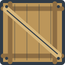

首轮资源 · 四角色与独立状态
资源预览，不是主干游戏；小图按42 / 48世界单位显示。朝向标记由逻辑驱动。
技能图标 · 原色32 / 灰度24 / 灰度16
会聊天
会撬锁
大力气
门、箱子与出口 · 状态符号
locked_door_closed
locked_door_open

heavy_crate
exit
selected
detected
searching
escaped
captured
cancelled
短音试听
聊天 · 循环
撬锁 · 循环
推箱 · 循环
发现 · 单次
抓回 · 单次
取消 · 单次
开门 · 单次
单人逃脱 · 单次
全员完成 · 单次